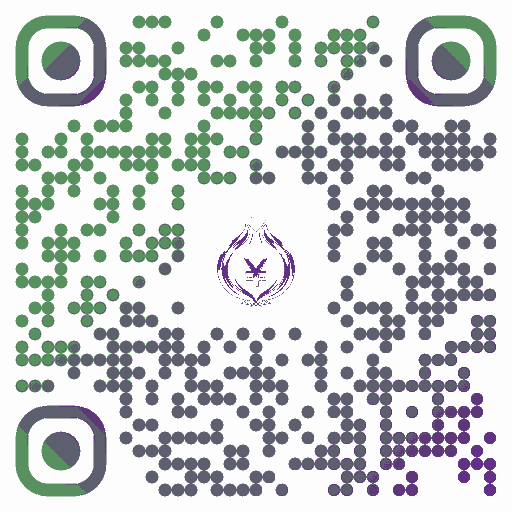

Compartilhar
Indique o Onion Payroll pra um colega peelar
o próprio contracheque também.
🔗 Link do App
Aponte a câmera pro QR code, ou toque em "Copiar Link" e cole onde quiser (WhatsApp, mensagem, etc.).

🎬 Vídeo de Apresentação (30s)
Mostra rapidinho como o app funciona — bom pra mandar junto com o link.